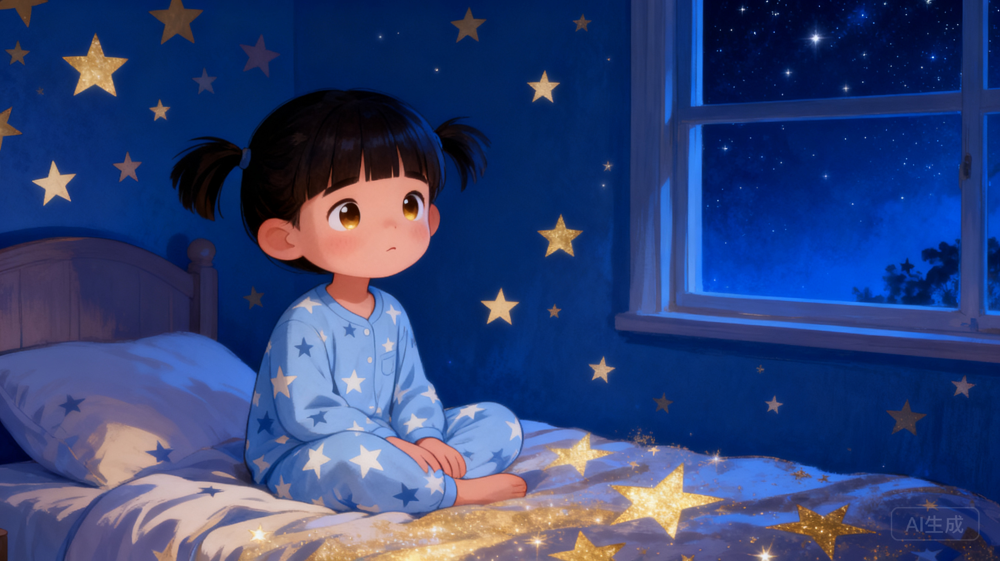
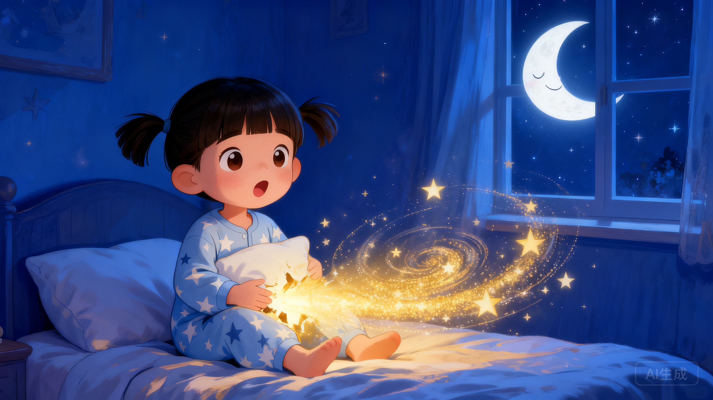
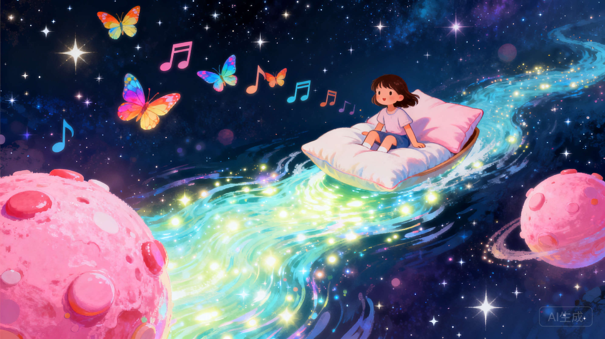
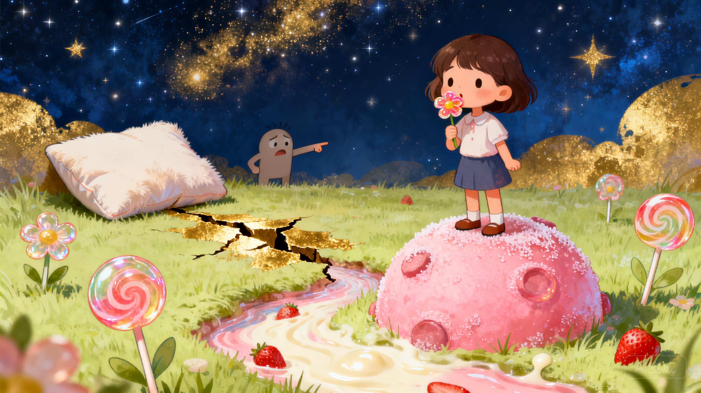
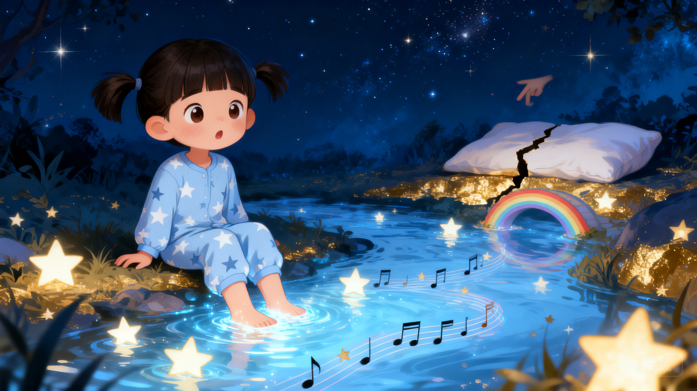
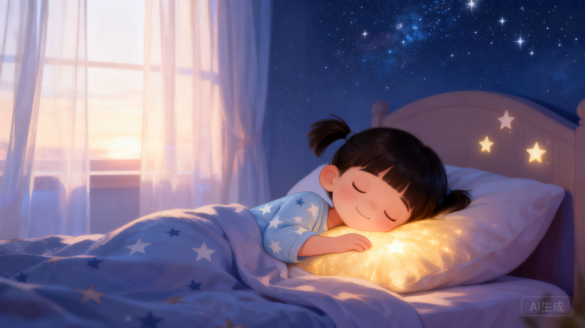
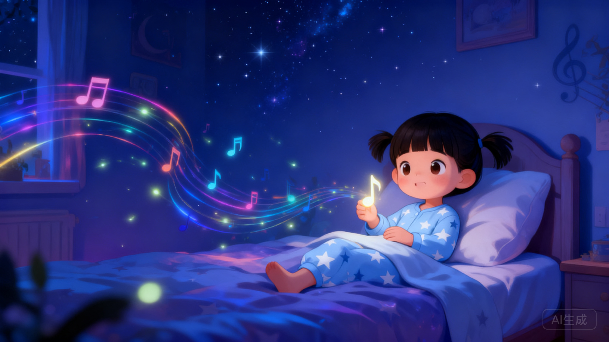
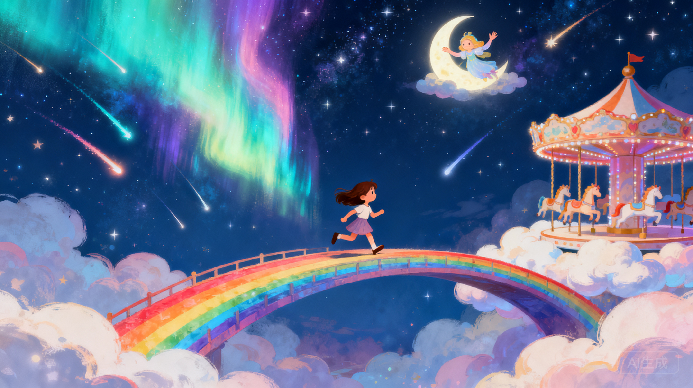

🌟 主角介绍
星星
⭐
小名：星星
7岁，一个充满好奇心的小女孩。
她脑子里装着十万个为什么，最大的烦恼就是——
晚上根本睡不着！
✨ 爱幻想
🌙 夜猫子
🚀 勇敢
🧸 抱枕爱好者

开始
7岁，一个充满好奇心的小女孩。
她脑子里装着十万个为什么，最大的烦恼就是——
晚上根本睡不着！

晚上九点半，其他小朋友都睡着了。
星星翻了个身，又翻了个身。被子被她踢成了一团，枕头被她拍得扁扁的。
"唉——睡不着啊！"星星叹了口气，使劲拍了拍枕头。
"哎哟！别拍了，痒死我啦！"
星星吓得一下子坐了起来。她瞪大眼睛看着自己的枕头——
枕头正慢慢地、慢慢地裂开一条缝，里面透出金色的光芒。
"你……你是谁？"星星小声问。
"我是你的枕头啊！既然你睡不着，我带你去一个地方——
我的肚子里，藏着一整个宇宙哟！"

星星深吸一口气，钻进了枕头里。
哇啊啊啊——！
她发现自己正漂浮在一大片星空中！脚下没有地板，头顶没有天花板，只有数不清的星星在眨眼睛。
有一颗粉色的星球像棒棒糖一样转着圈，上面种满了会发光的糖果花。远处有一条亮晶晶的河流，河水发出叮叮咚咚的声音——那是一条用梦做的河。
"坐稳啦！"枕头变成了一艘软乎乎的小船，载着星星在银河里滑行。小船经过的地方，星星们自动排成了五线谱，唱起了一首摇篮曲。
星星忍不住伸手去摸那些音符，指尖碰到的一瞬间，音符变成了彩色的小蝴蝶，绕着她飞舞。

星星在宇宙中飘着，眼前有两个地方都好好奇……
用手指点一点，帮星星做选择吧！👇
星星朝着粉色星球飘去。越靠近，香味越浓——是草莓味、巧克力味、还有棉花糖的味道混在一起！
她落在星球上，发现这里的草地是抹茶味的，花朵是棒棒糖做的，连小溪里流的都是草莓牛奶！
星星忍不住摘了一朵花放进嘴里——哇，是夹心软糖！她又摘了一颗星星果实，咬一口，里面流出甜甜的蜂蜜。
"太棒啦——！"星星在糖果星球上蹦蹦跳跳。
这时，枕头忽然紧张地喊了起来——
"星星——！天快亮了！通道在缩小了！！"

星星朝着闪闪发光的梦河飘去。河水是透明的，像一块流动的水晶，发出叮咚、叮咚的清脆声音。
河面上漂浮着一颗颗会唱歌的星星。它们排成队伍，时而变成五线谱唱摇篮曲，时而变成彩虹桥，从河这边跨到那边。
星星坐在河边，把脚伸进河水里——河水暖暖的，有一点点痒。她闭上眼睛，听着星星们的音乐会。
"太好听了……"星星喃喃地说。
这时，枕头忽然紧张地喊了起来——
"星星——！天快亮了！通道在缩小了！！"

枕头焦急地喊着："星星，快跟我回去吧！不然就来不及了！"
💫 星星该怎么办？
星星虽然好想再吃一颗糖果花，但她深吸一口气，转身朝着枕头跑去。
"我们回去吧！"她大声说。
"好孩子！"枕头变成一座光桥，托着星星飞向裂缝。就在通道合拢的最后一瞬间，她们双双跳了出去。
嘭！星星摔回了软软的床上。窗外，天边泛起了鱼肚白。
"呼——好累呀……"星星抱着枕头，困意像潮水一样涌上来。
枕头轻轻地说："你虽然贪吃，但是很听话。明天晚上，我带你去更好玩的地方！"
星星笑了。她紧紧抱住枕头，第一次觉得睡觉是一件这么期待的事。
—— 🌟 晚安，甜梦守护者 🌟 ——

星星看了看越来越小的裂缝，又看了看手里还剩下的半朵糖果花。
"就……再吃一口！"她把糖果花塞进嘴里，好甜呀！
等她抬起头来时，裂缝已经完全合拢了。
"啊……回不去了……"星星有点慌。
但枕头却没有生气。它抖了抖，温柔地说："回不去也没关系，我们就睡在这里吧。"
云朵棉花糖星球慢慢飘过来，软软的、暖暖的。星星躺在云朵上，像睡在一张全世界最舒服的大床上。枕头变成了一床金光的被子，盖在她身上。
星星做了一个世界上最甜的梦。第二天醒来，她发现枕头湿了一片——原来是云朵棉花糖化了！
—— 🌟 贪吃也是一种幸运 🌟 ——
星星的脚从梦河里抬起来，她依依不舍地看了看那些唱歌的星星。
"我……我能带走一颗星星吗？"她小声问。
一颗最小的星星跳了起来，落在她的掌心里，变成了一个亮晶晶的音符。
"谢谢你！"星星把音符小心地放进口袋，跟着枕头跑向裂缝。她们刚刚好赶上！
回到家，星星躺在床上，摸了摸口袋——那颗音符还在。
从那天起，每天晚上星星一躺下，口袋里的音符就会轻轻唱起一首温柔的摇篮曲。她的梦也变得像音乐一样美。
有时候，最美好的东西，就是一个小小的善良的念头。
—— 🌟 善良的人总会得到礼物 🌟 ——

星星舍不得走。她顺着梦河漂了下去，越漂越远。
"星星！通道要关了！"枕头急得直跳。
星星抬起头，才发现裂缝已经变成了一条细线。
"糟了！"她慌了。
这时，梦河里跳出一只月亮精灵，微笑着说："别怕，我认识另一条回家的路。"
月亮精灵挥了挥手，一道彩虹桥从梦河尽头一直延伸到星星的窗外！星星跳上彩虹桥——虽然绕了远路，可她看到了极光森林、流星雨瀑布，还有用云朵做的旋转木马！
她在天亮前的最后一秒跳回床上，心扑通扑通跳。
"这条路……好美啊。"星星喃喃地说，然后沉沉地睡着了。
有时候，勇敢地多待一会儿，反而能看到不一样的风景。
—— 🌟 勇敢的人会遇到奇迹 🌟 ——
